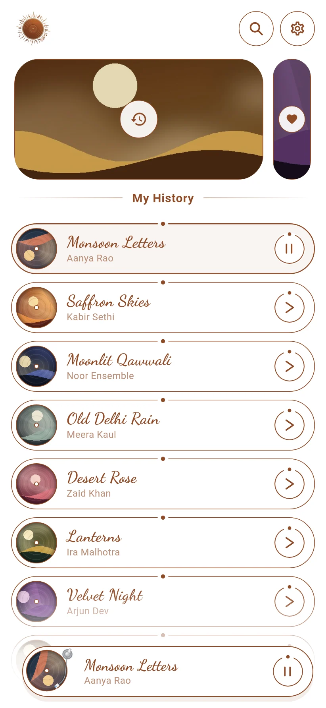
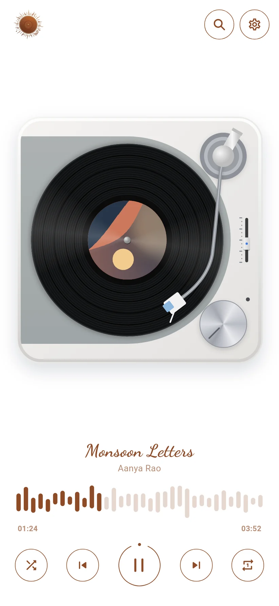
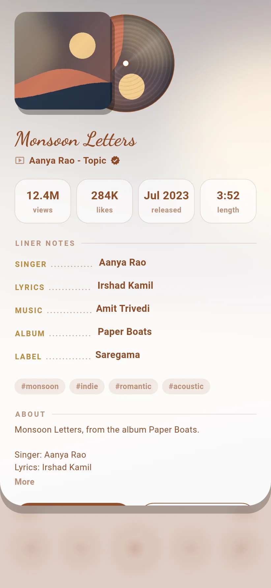
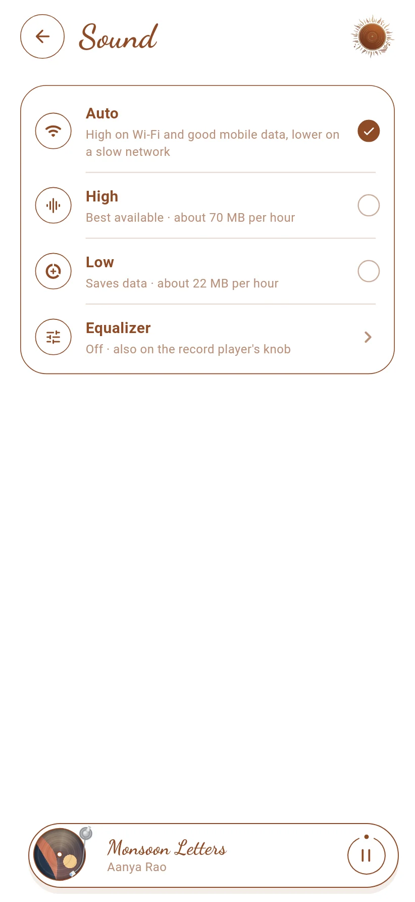
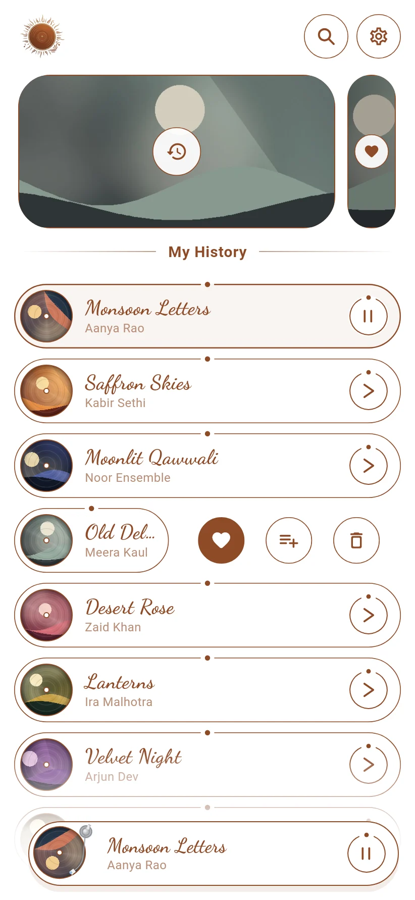
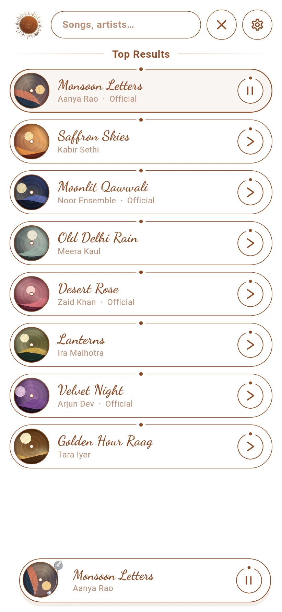
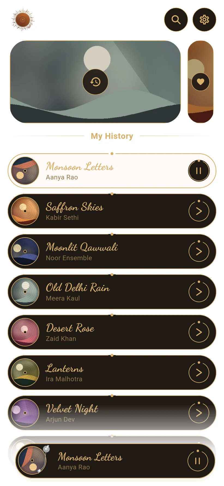
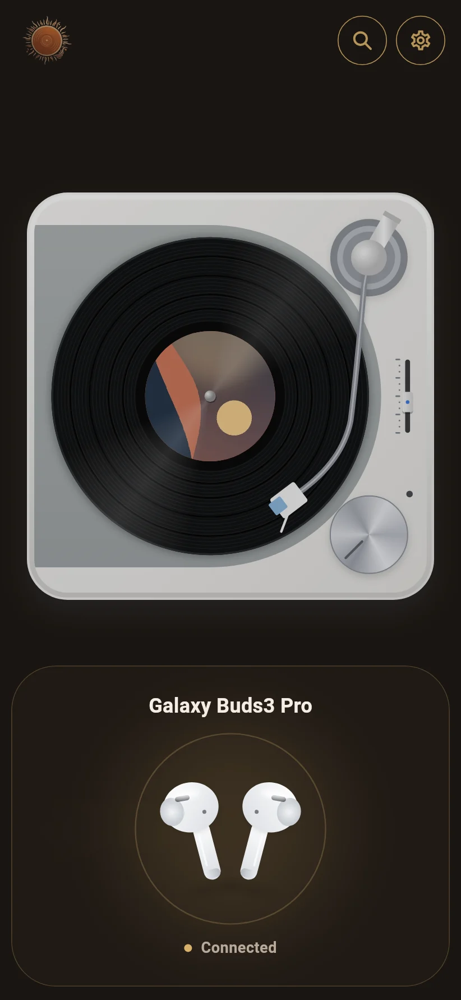
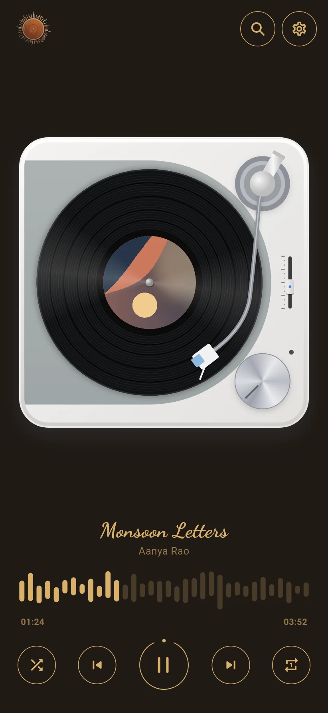

A music player for Android
Noor
Music in a warm light. A record player you can touch:
the record turns, the arm lowers, the knob shapes the sound.



The record player
Every song gets
its own record.
- The record turns with the song's artwork as its label. Swipe it to the next song; the arm lifts when you pause.
- The slider is your volume. It follows the phone's buttons; drag it, and its dot turns red past 60 %.
- The knob is the equalizer. It opens your phone's own sound settings, or Noor's presets where there are none.
- Double tap to love a song: a heart springs up. Again, and it cracks and falls.

Sound
The best version
of every song.
Noor picks the finest stream there is: Opus at about 160 kbps, never the squashed "stable volume" cut. Auto keeps it High on Wi-Fi and good data, and eases off on a slow line.
It starts playing while it downloads, keeps a gigabyte of songs for offline, and quietly upgrades older copies to High on Wi-Fi.
- ~160kbps
- Opus, High
- 1GB
- kept offline
- 0ads
- ever
Song details
Pull down for the
liner notes.
Swipe down on the player: a record sleeve drops in, its record slides out and turns, and the credits follow, the way they read on the back of an album.
Made for your thumb
Hold, swipe, let go.



Small moments
Your buds,
greeted.
Connect earbuds and a card rises with them gliding into place under a warm halo. Take them out and they drift apart and fade. Then it's gone, nothing left behind.
Also: "Play my favorites on Noor" with Google Assistant, a Bixby quick command, home-screen shortcuts, and updates that install themselves.

Copper by day.
Gold by night.

Bring Noor home
Free. No account, no ads. For Android phones.
Download the APKSigned, and it keeps itself up to date.
- Download noor.apk on your phone.
- Open it, and allow your browser to install apps when Android asks.
- Open Noor. New versions then arrive by themselves on Wi-Fi.